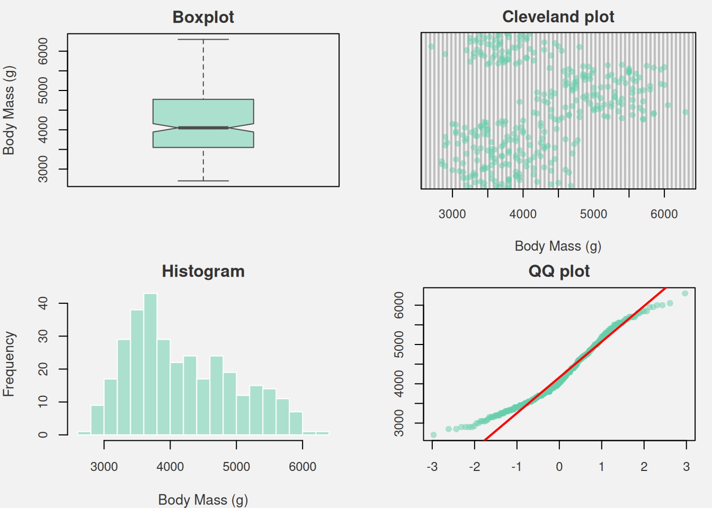
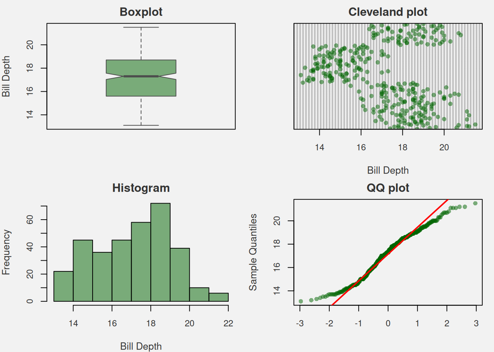
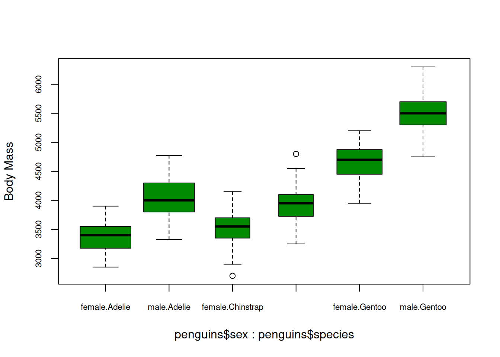
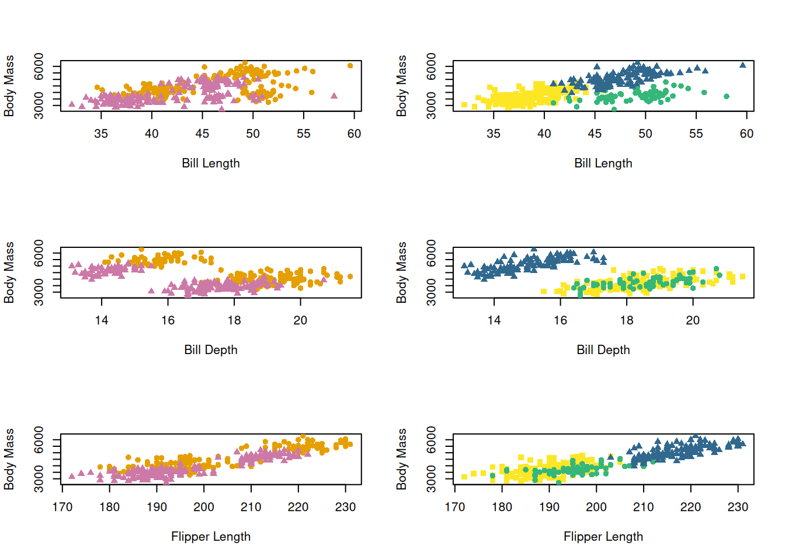
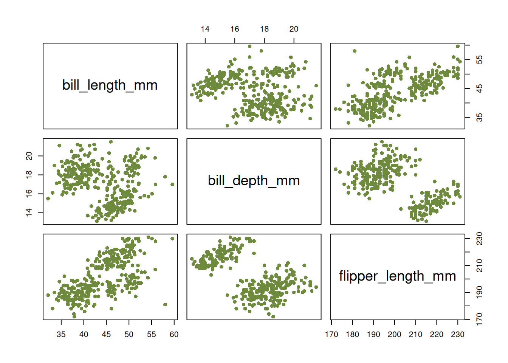
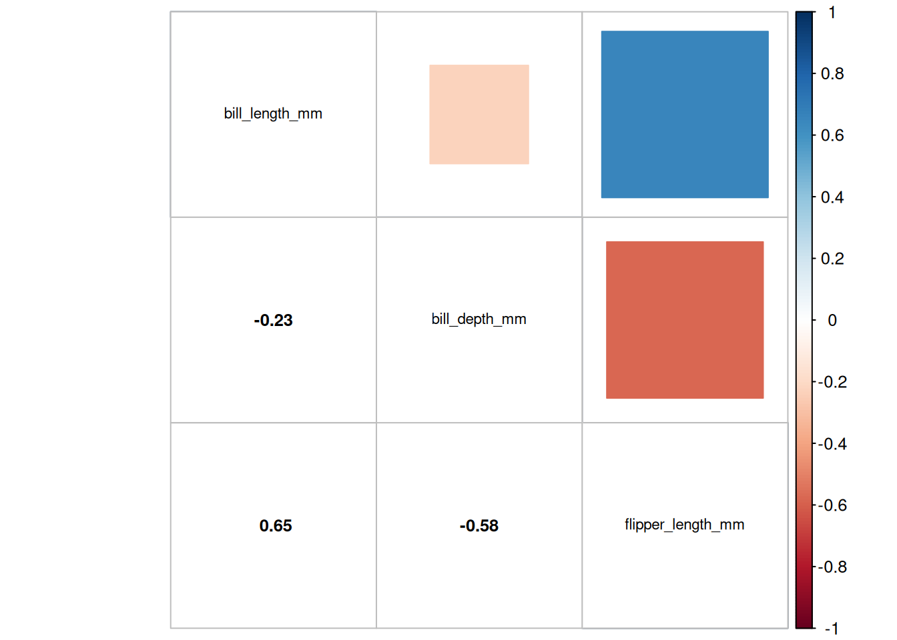
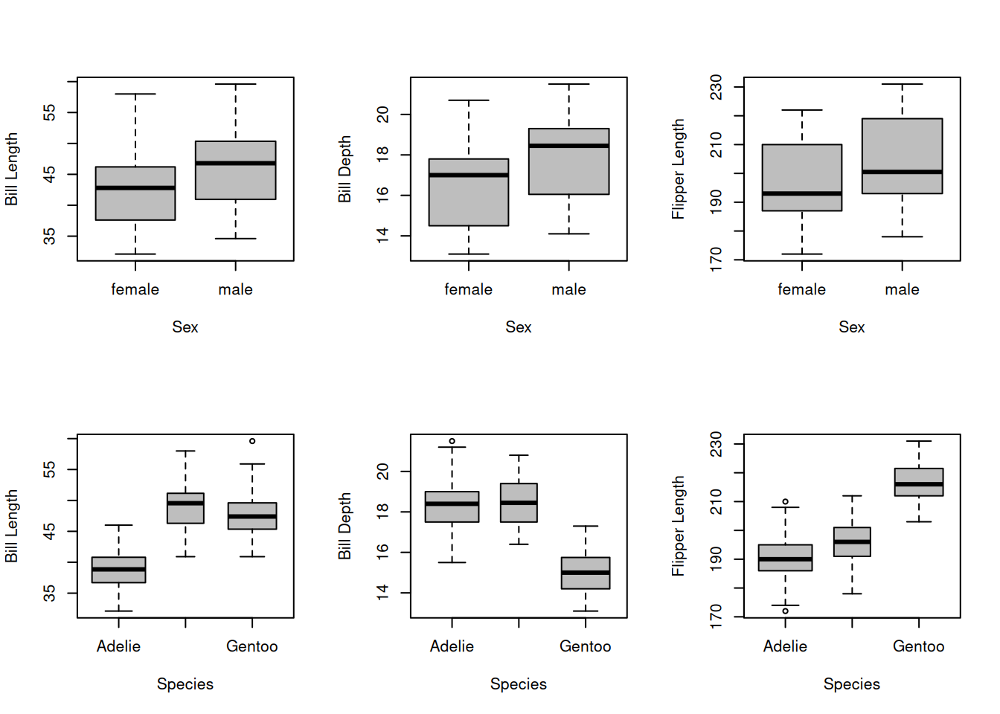
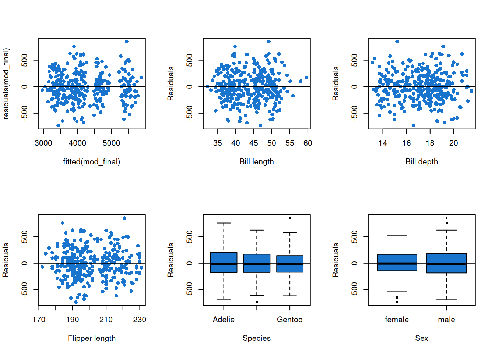

Code
library(MASS)
library(corrplot)corrplot 0.95 loadedPENGUINS EXAMPLE
We present here, a reminder sheet on the General Linear Model (GLM) and its specific features. Its use will be illustrated with an example applied to ecological data on penguins from Gorman, Williams, and Fraser (2014) .
The objective of the GLM is to explain a dependent variable as a function of independent explanatory variables measured on statistical units from a sample of a population. This type of model is generally constructed as follows:
\[Y = β*X + ε\]
\(Y\) is the response (dependent) variable to be explained. \(X\) is an explanatory (independent) variable that can explain \(Y\). There can be several explanatory variables in the model. β represents a coefficient, placed in front of the \(X\) variables, to measure their effect on the response variable. ε represents the errors in the model, i.e. what the model cannot explain.
There are three general types of linear models:
They each have their own specific characteristics and depend on the nature of the independent variables \(X\), which can be quantitative or qualitative. The response variable \(Y\) is always quantitative.
Linear regression is used when we want to determine whether a linear relationship exists between the response variable \(Y\) and one or more quantitative \(X\) variables (then called covariates).
ANOVA is used when the explanatory variables \(X\) are qualitative (then called factors). These qualitative \(X\) variables often have multiple categories (levels).
ANCOVA is used when we want to model the variable \(Y\) as a function of several \(X\) variables, which can be qualitative and quantitative.
Another important aspect to consider is that for this type of model to be valid, three conditions must be met:
the model residuals must follow a normal distribution
homoscedasticity (homogeneity of the variance of the residuals) must be respected
the residuals are independent
These conditions are systematically verified after modelling : the verification will be illustrated in the following example.
In this application example, we will use data from a study conducted by Dr. Kristen Gorman, who studied the physical characteristics of three species of penguins in the Palmer Archipelago in Antarctica. The data was collected on three islands of the archipelago in 2007, 2008, and 2009.
The researcher noted the following characteristics in the individuals studied:
species : species of individuals, qualitative variables, 3 levels (Adelie, Gentoo, Chinstrap)sex : sex of individuals, qualitative variables, 2 levels (male, female)bill_length_mm : bill length, quantitative variablebill_depth_mm : bill depth, quantitative variableflipper_length_mm : flipper length, quantitative variablebody_mass_g : body mass, quantitative variableWe also have information about the year of measurement and the island where the individuals live. We decide not to focus on these variables while studying the model. Indeed, we choose to focus our study on biological and morphological characteristics.
We will try to answer the following question : Which quantitative and qualitative variables can explain the variation in penguin body_mass_g?
In this case, the response variable is body_mass_g, and the other variables are assumed to be explanatory variables. We want to model the variable \(Y\) as a function of several qualitative and quantitative variables, therefore we do an ANCOVA.
The model can be build like this : model <- lm (body_mass_g ~ ..., data = penguins)
Here we import the libraries we will use during the analysis.
library(MASS)
library(corrplot)corrplot 0.95 loadedFirstly, we need to import the data, explore it, and see if there are any NA values, outliers, and so on. The data is accessible via the package palmerpenguins by Horst, Hill, and Gorman (2020).
# Data import
library(palmerpenguins)
data("penguins")
# Change categorical variables as factor
penguins$sex<-as.factor(penguins$sex)
penguins$species<-as.factor(penguins$species)
# Check for presence of missing values
colSums(is.na(penguins)) species island bill_length_mm bill_depth_mm
0 0 2 2
flipper_length_mm body_mass_g sex year
2 2 11 0 summary(penguins$sex)female male NA's
165 168 11 There are NA values in the dataset. Two rows contain missing values for all variables, except species. Values are missing for the variable sex in nine additional rows. There are different ways to process NA values. We decide to delete the two rows where almost all information is missing. Then, one option would be to replace the other missing values for the sex variable by “unknown” to specify that we don’t know whether the individual is a male or a female and to create a new level for this variable. However, with this option, the group whose sex is unknown would be underrepresented compared to male and female groups. As it seems interesting to test whether being a female or a male has an influence on the body mass of penguins, having rows where the sex of individuals is unknown is not really useful and could add noise to the analysis. Therefore, we decide to delete all rows containing NA values. Moreover, the rows including NA values only represented about 3% of the dataset.
# Check for presence of missing values
penguins<-na.omit(penguins)
colSums(is.na(penguins)) species island bill_length_mm bill_depth_mm
0 0 0 0
flipper_length_mm body_mass_g sex year
0 0 0 0 We now have handled NA values and can continue to explore the data before implementing the model to answer our question.
Data exploration is always the first step before analysis and model creation. This step is essential for identifying the structure of variables and checking for outliers, correlations, unbalanced distributions that could bias the results of the analysis.
\(Y\) (i.e body_mass_g ) is a continuous quantitative variable. Let’s take a look at its distribution, using the following graphs.
par(mfrow=c(2,2),
mar=c(4,4,2,1),
bg="gray95",
col.axis="gray20",
col.lab="gray20",
col.main="gray20",
cex.axis=0.9,
cex.lab=1)
col_transp <- adjustcolor("aquamarine3", alpha.f=0.5)
# Boxplot
boxplot(penguins$body_mass_g,
col=col_transp, border="gray30",
ylab='Body Mass (g)',
main = 'Boxplot',
notch=TRUE)
# Cleveland plot
dotchart(penguins$body_mass_g,
pch=16, col=col_transp,
xlab='Body Mass (g)',
main = 'Cleveland plot',
cex=0.8)
# Histogram
hist(penguins$body_mass_g,
col=col_transp,
border="white",
xlab="Body Mass (g)",
main = 'Histogram',
breaks=20)
# Quantile-Quantile plot
qqnorm(penguins$body_mass_g, pch=16, col=col_transp, xlab='', ylab='',main="QQ plot")
qqline(penguins$body_mass_g, col='red', lwd=2)
Based on the Boxplot, Cleveland plot and Histogram (Figure 1), it seems that there are no outliers in the \(Y\) variable body_mass_g. With the Q-Q plot, the data appears to follow a Gaussian distribution. However, \(Y\) normality is not a required assumption for our model. Keep in mind that we will need to check something about normality later on : the model residuals must follow a normal distribution in the case of a linear model.
We also take a look at the distribution of \(Xs\), using the same graphs.
#Don't show the code
par(mfrow=c(2,2),
mar=c(4,4,2,1),
bg="gray95",
col.axis="gray20",
col.lab="gray20",
col.main="gray20",
cex.axis=0.9,
cex.lab=1)
col_transp <- adjustcolor("darkgreen", alpha.f=0.5)
# Bill lenght
# Boxplot
boxplot(penguins$bill_length_mm,
col=col_transp, border="gray30",
ylab='Bill Length',
main = 'Boxplot',
notch=TRUE)
# Cleveland plot
dotchart(penguins$bill_length_mm,
pch=16,
col=col_transp,
xlab='Bill Length',
main = 'Cleveland plot')
# Histogram
hist(penguins$bill_length_mm,
col=col_transp,
xlab="Bill Length",
main="Histogram")
# Quantile-Quantile plot
qqnorm(penguins$bill_length_mm,
pch=16,col=col_transp,xlab='',
main = 'QQ plot')
qqline(penguins$bill_length_mm,col='red',lwd=2)# Bill depth
# Boxplot
boxplot(penguins$bill_depth_mm,
col=col_transp, border="gray30",
ylab='Bill Depth',
main = 'Boxplot',
notch=TRUE)
# Cleveland plot
dotchart(penguins$bill_depth_mm,
pch=16,
col=col_transp,
xlab='Bill Depth',
main = 'Cleveland plot')
# Histogram
hist(penguins$bill_depth_mm,
col=col_transp,
xlab="Bill Depth",
main="Histogram")
# Quantile-Quantile plot
qqnorm(penguins$bill_depth_mm,
pch=16,
col=col_transp,xlab='',
main = 'QQ plot')
qqline(penguins$bill_depth_mm,col='red',lwd=2)# Flipper lenght
# Boxplot
boxplot(penguins$flipper_length_mm,
col=col_transp, border="gray30",
ylab='Flipper Length',
main = 'Boxplot',
notch=TRUE)
# Cleveland plot
dotchart(penguins$flipper_length_mm,
pch=16,
col=col_transp,
xlab='Flipper Length',
main = 'Cleveland plot')
# Histogram
hist(penguins$flipper_length_mm,
col=col_transp,
xlab="Flipper Length",
main="Histogram")
# Quantile-Quantile plot
qqnorm(penguins$flipper_length_mm,
pch=16,
col=col_transp,xlab='',
main = 'QQ plot')
qqline(penguins$flipper_length_mm,col='red',lwd=2)


There appear to be no outliers for any of the quantitative variables.
Let’s describe what we observe while looking at the graphs in Figure 2. From the Cleveland plot, for the bill length variable, we can observe two distinct clusters which might be related to sexual dimorphism. For the bill depth, 3 clusters are observed on the Cleveland Plot : this variable might be related to the difference of bill depth between species. For flipper length, the Cleveland plot also reveals three distinct clusters. All these variables seem to follow a Gaussian distribution. Visualizing the distributions of the quantitative \(X\) variables allows us to formulate hypotheses regarding species differences and sexual dimorphism.
summary(penguins$species) Adelie Chinstrap Gentoo
146 68 119 summary(penguins$sex)female male
165 168 For the species variable, Chinstrap is a bit under-represented in comparison to other species. We will keep the variable for the model as it may capture important differences between groups. For the sex variable, the number of observations is almost equivalent for the male and female groups.
Now, we can explore the potential relationship between the response variable \(Y\) (body_mass_g) and the \(Xs\) variables. Keep in mind that this part of the analysis is based on graphs and doesn’t tell us if the relationships between variables are significant or not.

Looking at these graphs (Figure 3), there appears to be a positive linear relationship between body mass and other quantitative variables. A sexual dimorphism is observed : females tend to have a lower body mass than males. In addition, there may be species differences : Gentoo penguins appear to have higher body mass compared to Adelie and Chinstrap penguins, which have similar body mass measurements.
This section aims to check for potential interaction effects between the two qualitative variables. To do so, all combinations of their categories must be present in the data.
table(penguins$species, penguins$sex)
female male
Adelie 73 73
Chinstrap 34 34
Gentoo 58 61All categories are present and well balanced across the factors, allowing us to test for potential interactions between them.
boxplot(penguins$body_mass_g~penguins$sex*penguins$species, varwidth = TRUE, ylab = "Body Mass", col='green4', main = "",cex.axis=0.7)
Males appear to have a higher body mass than females for the three species. The difference between males and females may vary a little depending on the species. There may be a small interaction between the tow factors sex and species.
Then, we also check for potential interactions between explanatory quantitative variables and explanatory qualitative variables, using the following graphs.
par(mfrow=c(3,2))
# Interactions between Bill Length & Sex
plot(penguins$body_mass_g~penguins$bill_length_mm,type='n',ylab = "Body Mass",xlab="Bill Length")
points(penguins$body_mass_g[penguins$sex=="male"]~penguins$bill_length_mm[penguins$sex=="male"],pch=16,col='#E69F00')
points(penguins$body_mass_g[penguins$sex=="female"]~penguins$bill_length_mm[penguins$sex=="female"],pch=17,col='#CC79A7')
# Interactions between Bill Length & Species
plot(penguins$body_mass_g~penguins$bill_length_mm,type='n',ylab = "Body Mass",xlab="Bill Length")
points(penguins$body_mass_g[penguins$species=="Adelie"]~penguins$bill_length_mm[penguins$species=="Adelie"],pch=15,col='#FDE725')
points(penguins$body_mass_g[penguins$species=="Chinstrap"]~penguins$bill_length_mm[penguins$species=="Chinstrap"],pch=16,col='#35B779')
points(penguins$body_mass_g[penguins$species=="Gentoo"]~penguins$bill_length_mm[penguins$species=="Gentoo"],pch=17,col='#31688E')
# Interactions between Bill Depth & Sex
plot(penguins$body_mass_g~penguins$bill_depth_mm,type='n',ylab = "Body Mass",xlab="Bill Depth")
points(penguins$body_mass_g[penguins$sex=="male"]~penguins$bill_depth_mm[penguins$sex=="male"],pch=16,col='#E69F00')
points(penguins$body_mass_g[penguins$sex=="female"]~penguins$bill_depth_mm[penguins$sex=="female"],pch=17,col='#CC79A7')
# Interactions between Bill Depth & Species
plot(penguins$body_mass_g~penguins$bill_depth_mm,type='n',ylab = "Body Mass",xlab="Bill Depth")
points(penguins$body_mass_g[penguins$species=="Adelie"]~penguins$bill_depth_mm[penguins$species=="Adelie"],pch=15,col='#FDE725')
points(penguins$body_mass_g[penguins$species=="Chinstrap"]~penguins$bill_depth_mm[penguins$species=="Chinstrap"],pch=16,col='#35B779')
points(penguins$body_mass_g[penguins$species=="Gentoo"]~penguins$bill_depth_mm[penguins$species=="Gentoo"],pch=17,col='#31688E')
# Interactions between Flipper Length & Sex
plot(penguins$body_mass_g~penguins$flipper_length_mm,type='n',ylab = "Body Mass",xlab="Flipper Length")
points(penguins$body_mass_g[penguins$sex =="male"]~penguins$flipper_length_mm[penguins$sex=="male"],pch=16,col='#E69F00')
points(penguins$body_mass_g[penguins$sex=="female"]~penguins$flipper_length_mm[penguins$sex=="female"],pch=17,col='#CC79A7')
# Interactions between Flipper Length & Species
plot(penguins$body_mass_g~penguins$flipper_length_mm,type='n',ylab = "Body Mass",xlab="Flipper Length")
points(penguins$body_mass_g[penguins$species=="Adelie"]~penguins$flipper_length_mm[penguins$species=="Adelie"],pch=15,col='#FDE725')
points(penguins$body_mass_g[penguins$species=="Chinstrap"]~penguins$flipper_length_mm[penguins$species=="Chinstrap"],pch=16,col='#35B779')
points(penguins$body_mass_g[penguins$species=="Gentoo"]~penguins$flipper_length_mm[penguins$species=="Gentoo"],pch=17,col='#31688E')
Here are our observations regarding possible interactions, based on the graphs of Figure 4 :
Bill length and sex : there is a possible interaction. For some values of bill length, body mass is higher for males than females but for some values the opposite is true and females have a higher body mass than males.
Bill length and species : there are three color clusters that do not appear to mix on the graph. Individuals of the Gentoo species appear to have a higher body mass than the other species, but sometimes slightly lower depending on bill length values. A small interaction is possible.
Bill depth and sex : there appears to be no interaction between bill depth and sex. The relation between body mass and bill depth is the same for males and females and males body mass is higher than females body mass.
Bill depth and species : there appears to be no interaction between bill depth and species. The relation between body mass and bill depth observed previously during the data exploration is the same and the Gentoo species still stands out in terms of body mass : individuals of the Gentoo species still appear to have a higher body mass than the other species.
Flipper length and sex : there is a possible interaction. Body mass appears to increase with flipper length but for some values of flipper length, females can have a higher body mass than males.
Flipper length and species : there appears to be no interaction between flipper length and species. The relation between body mass and bill length observed previously during the data exploration is the same regardless the species and the Gentoo species still stands out in terms of body mass, which remains higher than the body of the other species on the graph.
These are only observations. For the moment, we don’t know which interactions are significant. This will be tested afterwards.
Collinearity should be avoided in modelling. Indeed, it can affect the modelling and the significance of the variables in the model, which affects the conclusions. Let’s check how the explanatory variables are related (Figure 5).
# Checking collinearity between continuous independent variables
plot(penguins[,3:5],pch=16,col='darkolivegreen4')M<-cor(penguins[,3:5])
corrplot.mixed(M,upper="square",lower.col="black", tl.col="black",cl.cex = 0.8,tl.cex = 0.7,number.cex =0.8)# Checking collinearity between categorical and continuous independent variables
par(mfrow=c(2,3))
#Bill Length and Sex
boxplot(penguins$bill_length_mm~penguins$sex, varwidth = TRUE, ylab = "Bill Length", xlab = "Sex", col='grey', main = "")
#Bill Depth and Sex
boxplot(penguins$bill_depth_mm~penguins$sex, varwidth = TRUE, ylab = "Bill Depth", xlab = "Sex", col='grey', main = "")
#Flipper Length and Sex
boxplot(penguins$flipper_length_mm~penguins$sex, varwidth = TRUE, ylab = "Flipper Length", xlab = "Sex", col='grey', main = "")
#Bill Length and Species
boxplot(penguins$bill_length_mm~penguins$species, varwidth = TRUE, ylab = "Bill Length", xlab = "Species", col='grey', main = "")
#Bill Depth and Species
boxplot(penguins$bill_depth_mm~penguins$species, varwidth = TRUE, ylab = "Bill Depth", xlab = "Species", col='grey', main = "")
#Flipper Length and Species
boxplot(penguins$flipper_length_mm~penguins$species, varwidth = TRUE, ylab = "Flipper Length", xlab = "Species", col='grey', main = "")


This verification of collinearity between \(Xs\) revealed a positive correlation between Flipper Length and Bill Length. The coefficient is below the threshold of 0.7, so we will not exclude any of these variables.
Note : In some cases, there may be a strong correlation between a specific variable and some other variables, with a high correlation coefficient (above 0.7, which is the threshold set in most cases). This situation can lead you to exclude this specific variable to avoid collinearity but you always need to justify your choice.
As for the other variables : For bill length, bill depth and flipper length, we observe a small difference between males and females. It appears that Adelie penguins have a shorter bill length than to the two other species. It appears that Gentoo penguins have a smaller bill depth and bigger flipper length than the other species.
Let’s recall our research question : we would like to identify the quantitative and qualitative variables that can explain the variation in penguin body_mass_g.
Once the data exploration is done, we can focus on finding the model that is adapted to our study. First, we write a full model including all variables presented before and possible interactions between them. Then, the goal is to obtain a fitted model (candidate model) that we can analyze in order to identify the main effects on our response variable body_mass_g and answer our research question. This candidate model can be obtained thanks to a selection based on Akaike Information Criterion (AIC).
After selection, the conditions of the linear model must be validated before making interpretations and conclusions.
Firstly, let’s write the full model, including all variables and possible interactions.
mod_penguins<-lm(body_mass_g ~ bill_length_mm
+ bill_depth_mm
+ flipper_length_mm
+ species
+ sex
+ sex : species
+ sex : bill_length_mm
+ sex : bill_depth_mm
+ sex : flipper_length_mm
+ species : bill_length_mm
+ species : bill_depth_mm
+ species : flipper_length_mm
, data=penguins)
# Let's check for significance
drop1(mod_penguins,test="F")Single term deletions
Model:
body_mass_g ~ bill_length_mm + bill_depth_mm + flipper_length_mm +
species + sex + sex:species + sex:bill_length_mm + sex:bill_depth_mm +
sex:flipper_length_mm + species:bill_length_mm + species:bill_depth_mm +
species:flipper_length_mm
Df Sum of Sq RSS AIC F value Pr(>F)
<none> 24459504 3767.1
species:sex 2 489389 24948893 3769.7 3.1513 0.04415 *
bill_length_mm:sex 1 11498 24471002 3765.2 0.1481 0.70064
bill_depth_mm:sex 1 265531 24725035 3768.7 3.4196 0.06536 .
flipper_length_mm:sex 1 36725 24496229 3765.6 0.4730 0.49214
bill_length_mm:species 2 5327 24464832 3763.1 0.0343 0.96628
bill_depth_mm:species 2 5153 24464657 3763.1 0.0332 0.96737
flipper_length_mm:species 2 137527 24597032 3764.9 0.8856 0.41350
---
Signif. codes: 0 '***' 0.001 '**' 0.01 '*' 0.05 '.' 0.1 ' ' 1Now, let’s select the significant terms of the model, based on AIC, using a forward-backward selection method. We can use the stepAIC function from the library MASS to select variables using the AIC. The function tests adding and removing interactions and variables to see which ones improve the AIC. The final model is the one with the lowest AIC.
mod_final <- stepAIC(mod_penguins, direction = "both")Start: AIC=3767.06
body_mass_g ~ bill_length_mm + bill_depth_mm + flipper_length_mm +
species + sex + sex:species + sex:bill_length_mm + sex:bill_depth_mm +
sex:flipper_length_mm + species:bill_length_mm + species:bill_depth_mm +
species:flipper_length_mm
Df Sum of Sq RSS AIC
- bill_depth_mm:species 2 5153 24464657 3763.1
- bill_length_mm:species 2 5327 24464832 3763.1
- flipper_length_mm:species 2 137527 24597032 3764.9
- bill_length_mm:sex 1 11498 24471002 3765.2
- flipper_length_mm:sex 1 36725 24496229 3765.6
<none> 24459504 3767.1
- bill_depth_mm:sex 1 265531 24725035 3768.7
- species:sex 2 489389 24948893 3769.7
Step: AIC=3763.13
body_mass_g ~ bill_length_mm + bill_depth_mm + flipper_length_mm +
species + sex + species:sex + bill_length_mm:sex + bill_depth_mm:sex +
flipper_length_mm:sex + bill_length_mm:species + flipper_length_mm:species
Df Sum of Sq RSS AIC
- bill_length_mm:species 2 4294 24468950 3759.2
- flipper_length_mm:species 2 160194 24624851 3761.3
- bill_length_mm:sex 1 13815 24478472 3761.3
- flipper_length_mm:sex 1 38162 24502818 3761.7
<none> 24464657 3763.1
- bill_depth_mm:sex 1 279275 24743932 3764.9
- species:sex 2 493957 24958614 3765.8
+ bill_depth_mm:species 2 5153 24459504 3767.1
Step: AIC=3759.19
body_mass_g ~ bill_length_mm + bill_depth_mm + flipper_length_mm +
species + sex + species:sex + bill_length_mm:sex + bill_depth_mm:sex +
flipper_length_mm:sex + flipper_length_mm:species
Df Sum of Sq RSS AIC
- flipper_length_mm:species 2 162193 24631143 3757.4
- bill_length_mm:sex 1 17259 24486209 3757.4
- flipper_length_mm:sex 1 37020 24505970 3757.7
<none> 24468950 3759.2
- bill_depth_mm:sex 1 279677 24748627 3761.0
+ bill_length_mm:species 2 4294 24464657 3763.1
+ bill_depth_mm:species 2 4119 24464832 3763.1
- species:sex 2 713112 25182063 3764.8
Step: AIC=3757.39
body_mass_g ~ bill_length_mm + bill_depth_mm + flipper_length_mm +
species + sex + species:sex + bill_length_mm:sex + bill_depth_mm:sex +
flipper_length_mm:sex
Df Sum of Sq RSS AIC
- bill_length_mm:sex 1 10167 24641310 3755.5
- flipper_length_mm:sex 1 29550 24660693 3755.8
<none> 24631143 3757.4
- bill_depth_mm:sex 1 266553 24897696 3759.0
+ flipper_length_mm:species 2 162193 24468950 3759.2
- species:sex 2 565896 25197039 3761.0
+ bill_depth_mm:species 2 27765 24603378 3761.0
+ bill_length_mm:species 2 6292 24624851 3761.3
Step: AIC=3755.53
body_mass_g ~ bill_length_mm + bill_depth_mm + flipper_length_mm +
species + sex + species:sex + bill_depth_mm:sex + flipper_length_mm:sex
Df Sum of Sq RSS AIC
- flipper_length_mm:sex 1 37776 24679085 3754.0
<none> 24641310 3755.5
- bill_depth_mm:sex 1 257321 24898631 3757.0
+ bill_length_mm:sex 1 10167 24631143 3757.4
+ flipper_length_mm:species 2 155101 24486209 3757.4
+ bill_depth_mm:species 2 27924 24613386 3759.1
+ bill_length_mm:species 2 6041 24635269 3759.4
- bill_length_mm 1 569156 25210466 3761.1
- species:sex 2 1469480 26110790 3770.8
Step: AIC=3754.04
body_mass_g ~ bill_length_mm + bill_depth_mm + flipper_length_mm +
species + sex + species:sex + bill_depth_mm:sex
Df Sum of Sq RSS AIC
<none> 24679085 3754.0
- bill_depth_mm:sex 1 227028 24906114 3755.1
+ flipper_length_mm:sex 1 37776 24641310 3755.5
+ bill_length_mm:sex 1 18392 24660693 3755.8
+ flipper_length_mm:species 2 144807 24534278 3756.1
+ bill_depth_mm:species 2 29046 24650039 3757.6
+ bill_length_mm:species 2 5566 24673520 3758.0
- bill_length_mm 1 624289 25303375 3760.4
- species:sex 2 1492684 26171770 3769.6
- flipper_length_mm 1 2614245 27293330 3785.6We can then use the coefficient given by the model :
coef(mod_final) (Intercept) bill_length_mm bill_depth_mm
-2357.33392 19.67307 105.46257
flipper_length_mm speciesChinstrap speciesGentoo
16.69243 -87.13281 1088.53204
sexmale speciesChinstrap:sexmale speciesGentoo:sexmale
1605.64215 -360.62936 -173.40442
bill_depth_mm:sexmale
-64.10611 summary(mod_final)
Call:
lm(formula = body_mass_g ~ bill_length_mm + bill_depth_mm + flipper_length_mm +
species + sex + species:sex + bill_depth_mm:sex, data = penguins)
Residuals:
Min 1Q Median 3Q Max
-733.83 -172.09 -13.83 173.04 851.00
Coefficients:
Estimate Std. Error t value Pr(>|t|)
(Intercept) -2357.334 689.805 -3.417 0.000713 ***
bill_length_mm 19.673 6.882 2.858 0.004534 **
bill_depth_mm 105.463 27.955 3.773 0.000192 ***
flipper_length_mm 16.692 2.854 5.849 1.21e-08 ***
speciesChinstrap -87.133 85.150 -1.023 0.306941
speciesGentoo 1088.532 142.221 7.654 2.27e-13 ***
sexmale 1605.642 682.022 2.354 0.019159 *
speciesChinstrap:sexmale -360.629 82.067 -4.394 1.51e-05 ***
speciesGentoo:sexmale -173.404 144.087 -1.203 0.229674
bill_depth_mm:sexmale -64.106 37.190 -1.724 0.085708 .
---
Signif. codes: 0 '***' 0.001 '**' 0.01 '*' 0.05 '.' 0.1 ' ' 1
Residual standard error: 276.4 on 323 degrees of freedom
Multiple R-squared: 0.8854, Adjusted R-squared: 0.8822
F-statistic: 277.1 on 9 and 323 DF, p-value: < 2.2e-16Some effects are not significant but they were kept in the model with the lowest AIC.
We can write the full model :
\[ Body\:mass = -2357,33 \:+\: 19,67.Bill\:length\:+\: 105,46.Bill\:depth\\ \:+\: 16,69.Flipper\:length \:-\: 87,13.Species\:Chinstrap \:+\: 1088,53.Species\:Gentoo\\ \:+\: 1605,64.Sex\:male \:-\: 360,63.(Species\:Chinstrap:Sex\:male)\\ \:-\: 173,40.(Species\:Gentoo:Sex\:male) \:-\: 63,11.(Bill\:depth:Sex\:male) + ε \]
We can check the part of the variance explained by the model, by using the adjusted R^2^. In the summary of the model, the adjusted R^2^ is equal to 0.88. It means that 88% of the variance of the body mass of penguins is explained by the relation given by mod_final.
Let’s check the conditions to validate our model. We need to verify the normality of the residuals, the homogeneity of their variances, and their independence.
Normality of the residuals
The normality of the residuals can be verified using a histogram and a QQ plot of the residuals. The histogram of the residuals must correspond to a normal distribution. The points of the QQ plot must lie primarily on the plotted line. If these conditions are met, the residuals are normally distributed.
par(mfrow=c(1,2))
# Histogram
hist(mod_final$residuals,col='dodgerblue3',xlab="residuals",main="Check Normality")
# Quantile-Quantile plot
qqnorm(mod_final$residuals,pch=16,col='dodgerblue3',xlab='')
qqline(mod_final$residuals,col='red',lwd=2)
We see that the residuals follow a normal distribution : we can validate the first condition.
Homogeneity of the variance
The hypothesis of the homogeneity of the variance means that the variance of residuals is constant over the entire range of explanatory variables. The residuals must be plotted against the estimated values and against the values of the significant variables. We can validate this hypothesis if the residuals show no trend.
par(mfrow=c(2,3))
# residuals vs fitted
plot(residuals(mod_final)~fitted(mod_final)
, col='dodgerblue3'
, pch=16)
abline(h = 0)
# residuals against Bill length
plot(residuals(mod_final)~ penguins$bill_length_mm,
pch=16,
col="dodgerblue3",
ylab = "Residuals",
xlab = "Bill length",
main = "")
abline(h = 0)
# residuals against Bill depth
plot(residuals(mod_final)~ penguins$bill_depth_mm,
pch=16,
col="dodgerblue3",
ylab = "Residuals",
xlab = "Bill depth",
main = "")
abline(h = 0)
# residuals against Flipper length
plot(residuals(mod_final)~ penguins$flipper_length_mm,
pch=16,
col="dodgerblue3",
ylab = "Residuals",
xlab = "Flipper length",
main = "")
abline(h = 0)
# residuals against Species
plot(residuals(mod_final)~ penguins$species,
pch=16,
col="dodgerblue3",
ylab = "Residuals",
xlab = "Species",
main = "")
abline(h = 0)
# residuals against Sex
plot(residuals(mod_final)~ penguins$sex,
pch=16,
col="dodgerblue3",
ylab = "Residuals",
xlab = "Sex",
main = "")
abline(h = 0)
The graphs show that residuals variances are homogeneous, for all variables. Thus, we validate the hypothesis of homogeneity of variance.
Independence
A linear model assumes that the statistical units studied, and their associated residuals, are independent of each other. This independence must be taken into account during the research design phase. In this study, measurements for each penguin were taken over three years in a large penguin colony; we can therefore consider the observations to be independent.
Our model reveals that penguin body mass is strongly associated with several morphological traits. Flipper length, bill depth, and bill length all show positive effects, with flipper length being the strongest predictor. Sex also contributes significantly, with males generally heavier than female. We can also identify species differences : Gentoo penguins are substantially heavier than Adelie and Chinstraps. Additionally, the negative interaction between species and sex (especially for Gentoo penguins) suggests species-specific patterns of sexual dimorphism that have a significant effect on body mass.
These results are consistent with the literature : morphological traits such as flipper length and bill depth are known to scale positively with structural size in penguins, and species-level differences in body mass, particularly the larger size of Gentoo penguins, have been documented (Williams (1995)).
Some effects are weaker or non-significant, such as the Gentoo × male interaction or the bill depth × sex interaction, which may reflect either natural biological variation or other possibilities. Importantly, our model does not include ecological or temporal, or individual-condition covariates, even though body mass may vary with season, breeding stage, and foraging success. This suggests that while morphology and species identity explain much of the variation, other ecological factors are likely to contribute to differences in body mass among penguins.
In summary, these results provide evidence that body mass in penguins is strongly predicted by some morphological traits, particularly flipper length, bill length and bill depth. Species and sex also contribute to variation in body mass. However, substantial unexplained variation suggests that additional factors also influence penguin body mass but are not captured by our model.
Using a General Linear Model helped us answering the question we initially formulated quite well.
Thank you for reading. We hope this reminder on General Linear Models, with this example, has been helpful. We wish you all the best.